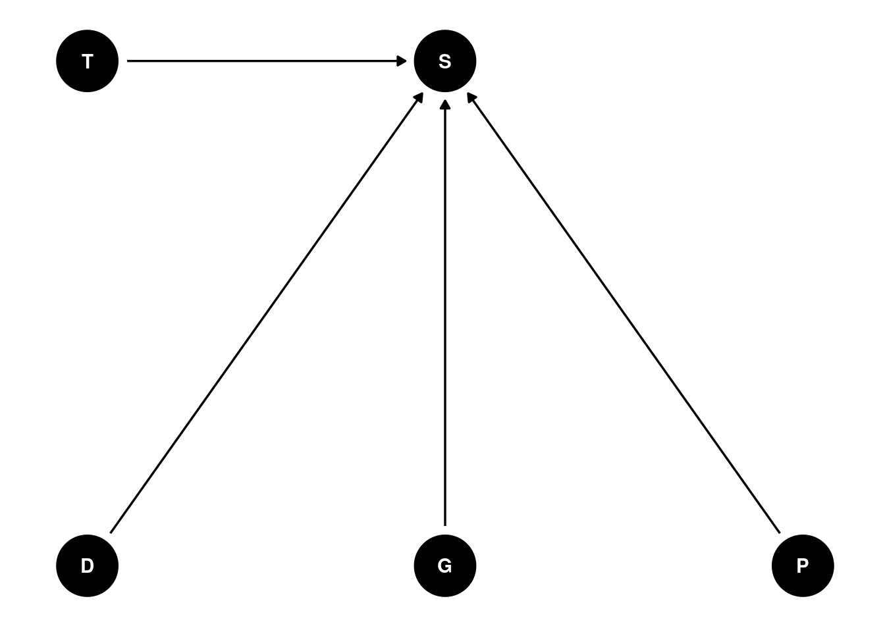
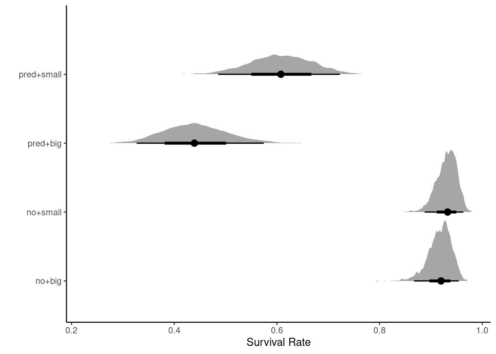

Conduct a prior predictive simulation for the Reedfrog model. By this I mean to simulate the prior distribution of tank survival probabilities αj. Start by using this prior:
$$
_j Normal({}, )
\
{} Normal(0, 1)
\
Exponential(1)
$$
Be sure to transform the αj values to the probability scale for plotting and summary. How does increasing the width of the prior on σ change the prior distribution of αj? You might try Exponential(10) and Exponential(0.1) for example.
NOTE: did this wrong!! This is not \(\alpha_j\), this is \(\bar{\alpha}\) . Checked Richard’s answers and I should be visualizing the population level effect (duh) - going to attempt this here:
Increasing sigma evens out the probability distribution instead of having it bunched in two extremes like we see at 0.1
Q2
Revisit the Reedfrog survival data, data(reedfrogs). Start with the varying effects model from the book and lecture. Then modify it to estimate the causal effects of the treatment variables pred and size, including how size might modify the effect of predation. An easy approach is to estimate an effect for each combination of pred and size. Justify your model with a DAG of this experiment.
The DAG presented in the lecture appears as:

I mostly agree with this, although I think that in a natural setting the DAG would look different and there would be confounds. In this case, we can add everything to the model and independently examine the effects (total and direct are the same) of each variable. However, in Richard’s answers he has an interaction between predation (P) and size (G) - which makes sense. Larger individuals are more likely to be noticed and predated upon.
prior class coef group resp dpar nlpar lb ub
normal(0, 1) b
normal(0, 1) b predpred
normal(0, 1) b predpred:sizesmall
normal(0, 1) b sizesmall
normal(0, 1.5) Intercept
exponential(0.1) sd 0
exponential(0.1) sd tank 0
exponential(0.1) sd Intercept tank 0
source
user
(vectorized)
(vectorized)
(vectorized)
user
user
(vectorized)
(vectorized)
summary(m)
Family: binomial
Links: mu = logit
Formula: surv | trials(density) ~ 1 + pred * size + (1 | tank)
Data: h06_q2_brms_data (Number of observations: 48)
Draws: 4 chains, each with iter = 2000; warmup = 1000; thin = 1;
total post-warmup draws = 4000
Group-Level Effects:
~tank (Number of levels: 48)
Estimate Est.Error l-95% CI u-95% CI Rhat Bulk_ESS Tail_ESS
sd(Intercept) 0.77 0.15 0.50 1.08 1.00 1571 2645
Population-Level Effects:
Estimate Est.Error l-95% CI u-95% CI Rhat Bulk_ESS Tail_ESS
Intercept 2.44 0.29 1.88 3.04 1.00 2469 2597
predpred -2.68 0.38 -3.39 -1.94 1.00 1781 2545
sizesmall 0.19 0.39 -0.55 0.97 1.00 2203 2665
predpred:sizesmall 0.49 0.49 -0.47 1.44 1.00 1802 2422
Draws were sampled using sample(hmc). For each parameter, Bulk_ESS
and Tail_ESS are effective sample size measures, and Rhat is the potential
scale reduction factor on split chains (at convergence, Rhat = 1).
brms eats the comparative levels, so we need to push them out (and make figures anyways!)
m %>%add_epred_draws(newdata = r, re_formula =NA) %>%rowwise() %>%mutate(interaction =paste0(pred,"+", size)) %>%ggplot() +stat_halfeye(aes(y = interaction, x = .epred/density,)) +theme_classic() +labs(y ="", x ="Survival Rate")

We see that size doesn’t matter in the absence of predators. Predators predictably decrease survival rate, but decrease survival rate for big tadpoles the most.
Ineractions are not in DAGs (always???)
Q3 (optional)
Return to the Trolley data, data(Trolley), from Chapter 12. Define and fit a varying intercepts model for these data. By this I mean to add an intercept parameter for the individual participants to the linear model. Cluster the varying intercepts on individual participants, as indicated by the unique values in the id variable. Include action, intention, and contact as treatment effects of interest. Compare the varying intercepts model and a model that ignores individuals. What is the impact of individual variation in these data?
Family: cumulative
Links: mu = logit; disc = identity
Formula: response ~ 1 + action + contact + intention
Data: trolley (Number of observations: 9930)
Draws: 4 chains, each with iter = 2000; warmup = 1000; thin = 1;
total post-warmup draws = 4000
Population-Level Effects:
Estimate Est.Error l-95% CI u-95% CI Rhat Bulk_ESS Tail_ESS
Intercept[1] -2.83 0.05 -2.92 -2.74 1.00 2301 2772
Intercept[2] -2.15 0.04 -2.24 -2.07 1.00 2712 2963
Intercept[3] -1.57 0.04 -1.65 -1.49 1.00 3184 2922
Intercept[4] -0.55 0.04 -0.62 -0.48 1.00 3395 2882
Intercept[5] 0.12 0.04 0.05 0.19 1.00 3652 3554
Intercept[6] 1.03 0.04 0.95 1.10 1.00 4088 3257
action1 -0.71 0.04 -0.78 -0.63 1.00 3485 3073
contact1 -0.96 0.05 -1.06 -0.86 1.00 3847 3177
intention1 -0.72 0.04 -0.79 -0.65 1.00 3856 3039
Family Specific Parameters:
Estimate Est.Error l-95% CI u-95% CI Rhat Bulk_ESS Tail_ESS
disc 1.00 0.00 1.00 1.00 NA NA NA
Draws were sampled using sampling(NUTS). For each parameter, Bulk_ESS
and Tail_ESS are effective sample size measures, and Rhat is the potential
scale reduction factor on split chains (at convergence, Rhat = 1).
summary(mod_ind)
Family: cumulative
Links: mu = logit; disc = identity
Formula: response ~ 1 + action + contact + intention + (1 | id)
Data: trolley (Number of observations: 9930)
Draws: 4 chains, each with iter = 2000; warmup = 1000; thin = 1;
total post-warmup draws = 4000
Group-Level Effects:
~id (Number of levels: 331)
Estimate Est.Error l-95% CI u-95% CI Rhat Bulk_ESS Tail_ESS
sd(Intercept) 1.89 0.08 1.74 2.06 1.01 704 1694
Population-Level Effects:
Estimate Est.Error l-95% CI u-95% CI Rhat Bulk_ESS Tail_ESS
Intercept[1] -3.98 0.12 -4.21 -3.74 1.01 273 846
Intercept[2] -3.05 0.12 -3.29 -2.82 1.01 257 681
Intercept[3] -2.27 0.12 -2.50 -2.04 1.01 247 694
Intercept[4] -0.80 0.11 -1.02 -0.58 1.01 237 665
Intercept[5] 0.24 0.11 0.01 0.46 1.01 239 592
Intercept[6] 1.64 0.12 1.41 1.87 1.01 252 776
action1 -0.96 0.04 -1.04 -0.88 1.00 6304 3276
contact1 -1.27 0.05 -1.37 -1.17 1.00 7010 3181
intention1 -0.96 0.04 -1.03 -0.88 1.00 9235 2834
Family Specific Parameters:
Estimate Est.Error l-95% CI u-95% CI Rhat Bulk_ESS Tail_ESS
disc 1.00 0.00 1.00 1.00 NA NA NA
Draws were sampled using sampling(NUTS). For each parameter, Bulk_ESS
and Tail_ESS are effective sample size measures, and Rhat is the potential
scale reduction factor on split chains (at convergence, Rhat = 1).
waic(mod_naive)
Computed from 4000 by 9930 log-likelihood matrix
Estimate SE
elpd_waic -18545.0 38.1
p_waic 9.0 0.0
waic 37089.9 76.2
waic(mod_ind)
Computed from 4000 by 9930 log-likelihood matrix
Estimate SE
elpd_waic -15670.0 88.8
p_waic 355.1 4.6
waic 31340.0 177.6
1 (0.0%) p_waic estimates greater than 0.4. We recommend trying loo instead.